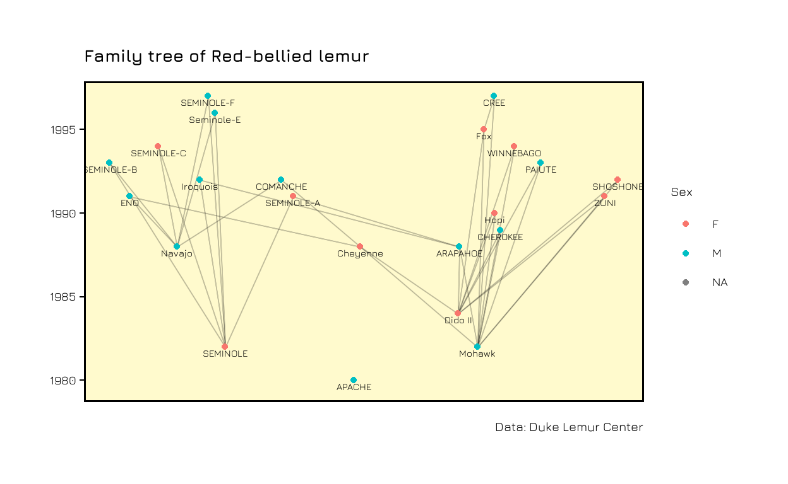

Networks can be useful when visualizing family trees. I explored the possibilities of doing this with the {ggraph} package for family information of Lemurs for #TidyTuesday. In this blogpost I describe step by step how to create the visuals.
I recently bought the beautiful book “Data Sketches” by Nadieh Bremer and Shirley Wu, and it has been a joy looking at their awesome projects. First of all, I really like the idea of having one project per month and having someone who pushes you and who “expects the output.” Maybe I would also need something similar for my blog. Currently, I am trying to participate in the weekly #TidyTuesday initiative, and in one of the past weeks, we were looking at lemur data. I planned to show the family tree for several lemur families as a network, inspired by what Nadieh Bremer did for the royal families. Take a moment to visit the stunning visuals she created.
For creating the family trees we will need dplyr for data manipulation, ggraph and igraph for the networks and graphlayouts for the manual positioning of the monkeys. The data can be loaded from the TidyTuesday repository as seen below.
The data contains one row for each lemur. The taxon stands for the different lemur families, DMAD for example for the Aye-aye lemur family. If available, the data contains date of birth (dob), and the ID of mother and father.
| taxon | dlc_id | sex | dob | dam_id | dam_dob | sire_id | sire_dob | lemur_name |
|---|---|---|---|---|---|---|---|---|
| DMAD | 6771 | M | 2000-12-15 | 6674 | 1996-04-15 | 6201 | 1985-12-18 | Ardrey-A |
| DMAD | 6772 | M | 2001-01-07 | 6454 | 1988-11-30 | 6202 | 1986-12-19 | Tolkein |
| DMAD | 6786 | F | 2001-07-30 | 6452 | 1983-12-04 | 6201 | 1985-12-18 | Lucrezia |
| DMAD | 6787 | F | 2001-09-05 | 6674 | 1996-04-15 | 6201 | 1985-12-18 | Salem |
| DMAD | 6788 | M | 2001-10-25 | 6453 | 1985-10-11 | 6451 | 1981-10-08 | Ozony Avelo |
| DMAD | 6820 | F | 2003-09-26 | 6454 | 1988-11-30 | 6202 | 1986-12-19 | Sabrina |
| DMAD | 6821 | F | 2003-10-14 | 6453 | 1985-10-11 | 6451 | 1981-10-08 | Medusa |
| DMAD | 6842 | F | 2004-09-10 | 6721 | 1998-01-06 | 6202 | 1986-12-19 | Medea |
| DMAD | 6851 | M | 2005-02-22 | 6454 | 1988-11-30 | 6202 | 1986-12-19 | Hitchcock |
First, we will build the edges. We want to have one connection from each father and each mother to their child.
| from | to |
|---|---|
| WILD | 6454 |
| 6452 | 6480 |
| 6453 | 6514 |
| 6261 | 6515 |
| 6454 | 6561 |
Next, we create the vertices. We want to have some information stored in the vertices, namely the name of the lemur, the birthday, and the sex. Every vertex which was mentioned in the edges (i.e. every child, father and mother) has to be present in the vertices data frame. Therefore we will concatenate the rows of children, fathers and mothers. The columns have to have the same names for each group for the concatenation to work.
We have to remove duplicate names. And instead of birthday, we will just keep the birth year.
| name | lemur_name | sex | year |
|---|---|---|---|
| 6201 | Nosferatu | M | 1985 |
| 6202 | Poe | M | 1986 |
| 6261 | SAMANTHA | F | 1978 |
| 6262 | ANNABEL LEE | F | 1988 |
| 6451 | Mephistopheles | M | 1981 |
Now, we can create the graph. simplify removes loops and multiple edges, as.undirected removes the direction of the connections, which is important for the backbone network we will introduce later.
g <- graph_from_data_frame(edges, vertices = vertices) %>%
simplify() %>%
as.undirected()
Let’s take a look at the network. We color the nodes by sex and add the name of the individual close to each node. We use check_overlap = TRUE to remove labels if they overlap with others.
ggraph(g) +
geom_edge_link0(edge_width = 0.1, alpha = 0.2)+
geom_node_point(aes(col = vertices$sex))+
geom_node_text(aes(label = vertices$lemur_name),
size = 5, check_overlap = TRUE, nudge_y = -0.1)
Now, we have a network where each child is connected to their parents. However, we are missing the temporal component. I first tried to put the year on one axis and a random value for each individual on the other axis, but it was a mess. This is when I found this blogpost by David Schoch. At the end of the post, David talks about backbone networks. The method described in this paper is used to disentangle networks with a lot of (weak) connections between all nodes. This is not our case, but it still came in handy to solve the problem I was trying to solve, namely to add a time component.
The layout_as_backbone method from the {graphlayouts} package is giving us coordinates to plot our network manually. We will use the year of birth of each individual on the y-axis and get the corresponding x-axis value from the backbone network.
bb <- layout_as_backbone(g)
ggraph(g, layout = "manual", x = bb$xy[,1], y = year) +
geom_edge_link0(edge_width = 0.1, alpha = 0.2)+
geom_node_point(aes(col = vertices$sex))+
geom_node_text(aes(label = vertices$lemur_name),
size = 5, check_overlap = TRUE, nudge_y = -0.4)
In the end we can use themes and titles to make the plot prettier.
The next step is to put this procedure into a function to be able to repeat it easily for other families. If you want to see the whole code, take a look at my Github repository.
